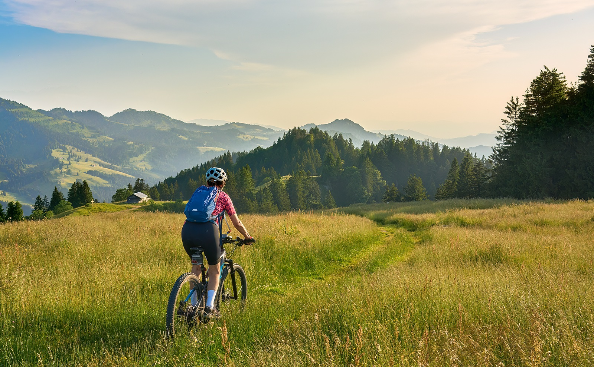

Mit unserer neuen Kampagne machen wir auf typische Risikosituationen aufmerksam - direkt, einprägsam und mit einem Augenzwinkern. Auf Plakaten und Tankstellen an Landstraßen, im Radio und auf Social Media. Für mehr Aufmerksamkeit und mehr Sicherheit auf jeder Fahrt.
Besuche unsere Kampagnenseite “E im Griff” und entdecke weitere Sicherheitstipps rund um das Thema Pedelec!

Prototyp · Fahrrad-Modul · Desktop: „Nächster Tipp“ oder Pfeiltasten · Mobile: Wischen